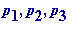
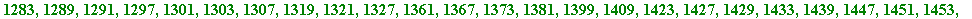
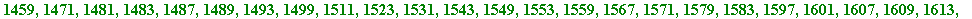
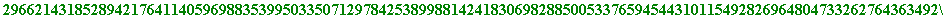
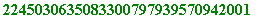

> # pockling(ton).mws
Using
Pocklington's
(1914)
theorem
to test
primality of some specially constructed numbers
[ An initial carrot . Below I present - with proof - the (quite fortuitous) discovery of a 2000-digit prime . I would like to call it a millennium prime .]
Introduction
. In a separate Maple worksheet (1914_pap.mws) I have worked through H.C.Pocklington's paper
The Determination of the
Prime or Composite Nature of Large Numbers by Fermat's theorem
, which was published in the
Proceedings of the Cambridge Philosophical
Society in 1916 (it was only two pages long!), and "Read" by Pocklington on the 9th. of March 1914. In modern expositions of Pocklington's paper
there is some lack of consistency as to what is ' Pocklington's Theorem ' - possibly because at no point in his paper does Pocklington himself
actually state a theorem! - one has to weed it (actually them) out from his (beautiful) analysis of some consequences of Fermat's 'little' theorem.
What I did in 1914_pap.mws was to go back to Pocklington's original paper, work through his presentation (changing some notation here and there -
I don't like his using '
 ' as a symbol for a prime - and also try to make it more understandable), and weave in some illustrative Maple computations
' as a symbol for a prime - and also try to make it more understandable), and weave in some illustrative Maple computations
(Pocklington's paper does not contain a single numerical illustration!).
My aim in this worksheet was to present some illustrations of his theorem - or rather one version of one of his theorems - to some specially constructed numbers, to present to my third year B.Ed. and B.A. students in this year's Number Theory and Cryptography course.
Anyone well versed in number theoretical arts will immediately recognise that the numbers I have chosen as possible candidates for being prime stood little chance of success ; rather they were chosen (from a huge range of other equally interesting possible ones) because of the beauty of their structure.
I have (like any number theorist) a deep personal attachment to the
Euclidean numbers
- the numbers of the form
 ...
- where
...
- where

, ... ,
are the first
n
prime numbers, and what I have done here was to choose
, and form its
n
-th power
. That latter number - which is obviously greater than
 ...
...
 - is the '
- is the '
 ' in the following theorem, as is the number
...
the
'U
' of it.
' in the following theorem, as is the number
...
the
'U
' of it.
A
Pocklington theorem
: Let
N
be a natural number and let
, where
p
is prime,
 is the largest power of
p
dividing (
is the largest power of
p
dividing (
 ), and
. Suppose also that
), and
. Suppose also that
(mod
N
) for some integer
a
... (
i
)
and
... (
ii
)
then N is prime . [ end ]
So, I now wish to apply that theorem to the sequence of numbers {
 }, where:
}, where:
= 2*3 + 1,
 = 2*3*
= 2*3*
 + 1,
+ 1,
 = 2*3*
*
+ 1,
= 2*3*
*
+ 1,
.
.
=
 ...
...
Nomenclature . [" What's in a name? ... "] I would like to call the above numbers ' L shaped Euclidean numbers ', the name being suggested by the following picture:
7
*
7
*
7
= 2*3*5* + 1
The L shaped Euclidean numbers can be computed by defining the function ' f ' as follows :
> f := n -> product(ithprime(k), k=1..n)*ithprime(n+1)^n + 1;
![[Maple Math]](images/MILL_PRI30.gif)
> f(1); # 2*3 + 1:

> f(2); # 2*3*5^2 + 1:

> f(3); # 2*3*5*7^3 + 1:
These - and others - are the numbers that I wish to subject to the above Pocklington theorem to test for primality.
Before launching into a systematic search, I will illustrate
two
individual
examples
-
 and
- with
'
a
' chosen to be 2:
and
- with
'
a
' chosen to be 2:
> f(9);
> 2&^(f(9) - 1) mod f(9);

Thus
has failed condition (
i
) of Pocklington - which, being
Fermat's
test to the base 2
- means immediately that
 is composite.
is composite.
Now to test
 :
:
> f(10);
> 2&^(f(10) - 1) mod f(10);
> igcd(2&^((f(10)-1)/ithprime(11)) mod f(10) - 1, f(10));

Thus
 is
proved
to be
prime
by Pocklington's theorem.
is
proved
to be
prime
by Pocklington's theorem.
Now to engage in a systematic search, in which I fix ' a ' at 2 .
I
first
seek numbers which satisfy
condition (
i
)
of Pocklington's theorem; that is, I simply look for values of
'
k
' for which
passes
Fermat's test to the base 2.
Subsequently
I will further subject the corresponding
f
's to
condition (
ii
)
of Pocklington's theorem. [Of course I realise that I could
have incorporated the two conditions into a single procedure.]
>
candidates := proc(m, n)
local k;
for k from m to n do
if 2&^(f(k)-1) mod f(k) = 1
then print(k)
fi
od
end:
> candidates(1, 30);


So, we have four candidates out of the first thirty L shaped Euclidean numbers.
The first two produce primes (
 = 2*3 + 1 = 7, and
= 2*3*
+ 1 = 151, are prime). I have already shown
= 2*3 + 1 = 7, and
= 2*3*
+ 1 = 151, are prime). I have already shown
 is prime above, and so only
remains:
is prime above, and so only
remains:
> igcd(2&^((f(20)-1)/ithprime(21)) mod f(20) - 1, f(20));

So
 is also prime, and here it is:
is also prime, and here it is:
> f(20);
> length(f(20));
I now proceed to search for others:
> candidates(31, 60); # no output
> candidates(61, 120); # no output
> candidates(121, 180);

> igcd(2&^((f(173)-1)/ithprime(174)) mod f(173) - 1, f(173));

> length(f(173));

Great!!! It follows that is prime, and it has 952 digits!!
I want a ' titanic ' prime (one with at least 1000 digits) though!!
On we go:
> candidates(181, 240); # no output
> candidates(241, 300); # no output
> length(f(300));
> candidates(301, 330);
At long last - another L shaped candidate!!
Let's subject it to condition ( ii ) of Pocklingtho's theorem:
> igcd(2&^((f(325)-1)/ithprime(326)) mod f(325) - 1, f(325));

Great!!!
 is prime!!! And how many digits does it have?:
is prime!!! And how many digits does it have?:
> length(f(325));

Wow!!! I'd like to call it a millenium prime .
And here it is:
> f(325);
This is how
 is constructed
.
is constructed
.
First , form the first 325 primes:
> seq(ithprime(k), k=1..325);


Next , form their product:
> U := product(ithprime(k), k=1..325);

Now , let ' p ' be the 326-th. prime number:
> p := ithprime(326);
Form the 325-th. power of that prime p :
> p^325;



Finally , form the number N , defined by .
That N is the number 2000-digit prime , which I would like to
call ' millennium prime '. Here it is:
> millennium_prime := p^325*U + 1;


> length(millennium_prime);